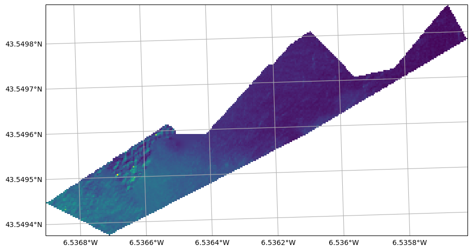
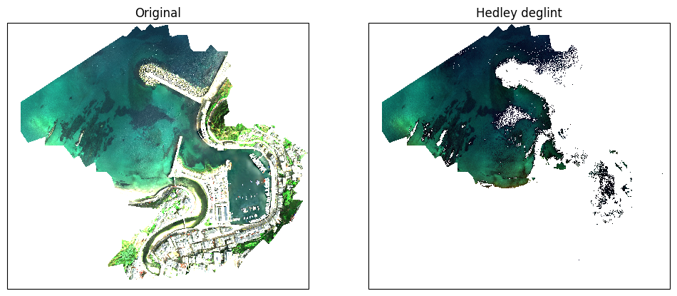

Sunglint Removal
[1]:
import sys
import numpy as np
import matplotlib.pyplot as plt
sys.path.append(r'C:\Users\sergi\Documents\repos\geopy\geopy')
import preprocessing.deglinting as deglinting
import reader
from image import Image
import plot
Data loading
[2]:
filename = r"D:\UAVs\data\rasters\downsample\20230426_nan_average_downsampling_x5_y5.tif"
uav = reader.open(filename)
uav.rename({"Band 1": "Blue", "Band 2": "Green", "Band 3": "Red", "Band 4": "NIR"})
[2]:
<xarray.Dataset> Size: 96MB
Dimensions: (y: 2053, x: 2327)
Coordinates:
* y (y) float64 16kB 4.825e+06 4.825e+06 ... 4.824e+06 4.824e+06
* x (x) float64 19kB 6.987e+05 6.987e+05 ... 6.995e+05 6.995e+05
projection int64 8B 0
Data variables:
Blue (y, x) float32 19MB nan nan nan nan nan ... nan nan nan nan nan
Green (y, x) float32 19MB nan nan nan nan nan ... nan nan nan nan nan
Red (y, x) float32 19MB nan nan nan nan nan ... nan nan nan nan nan
NIR (y, x) float32 19MB nan nan nan nan nan ... nan nan nan nan nan
Band 5 (y, x) float32 19MB nan nan nan nan nan ... nan nan nan nan nan
Attributes:
_FillValue_band_1: -32767.0
_FillValue_band_2: -32767.0
_FillValue_band_3: -32767.0
_FillValue_band_4: -32767.0
_FillValue_band_5: -32767.0
tiff_AREA_OR_POINT: Area
grid_mapping: projectionDeep water area
Load
[3]:
import geopandas as gpd
shapes = gpd.read_file(r"D:\UAVs\data\shapefiles\deep_water\deep_water.shp").to_crs(uav.crs).geometry
Creates a copy os uav
[4]:
mask : Image = uav.empty_like()
for band in uav.band_names:
mask.add_band(band, uav.select(band))
mask.geometry_mask(shapes)
mask.dropna()
fig, ax =plot.get_geofigure(mask, 1, 1)
plot.plot_band(mask, 'Blue', ax = ax)
plot.add_gridlines(ax)
c:\Users\sergi\Documents\repos\geopy\.venv\Lib\site-packages\pyproj\crs\crs.py:1295: UserWarning: You will likely lose important projection information when converting to a PROJ string from another format. See: https://proj.org/faq.html#what-is-the-best-format-for-describing-coordinate-reference-systems
proj = self._crs.to_proj4(version=version)
[4]:
(<GeoAxes: >, <cartopy.mpl.gridliner.Gridliner at 0x2514ea6bc10>)

Mask using hedley deglint
[5]:
fig, axs = plot.get_geofigure(uav, 1, 2)
plot.plot_rgb(uav, 'Red', 'Green', 'Blue', ax=axs[0], brightness=15)
axs[0].set_title("Original")
deep_area = mask.values
to_correct = uav.select(["Blue", "Green", "Red"])
nir_band = uav.select("NIR")
nir_index_in_deep_area = mask.band_names.index("NIR")
blue, green, red = deglinting.hedley(deep_area, to_correct, nir_band, nir_index_in_deep_area)
for band, data in zip(["Blue", "Green", "Red"], [blue, green, red]):
uav.add_band(band, data)
plot.plot_rgb(uav, 'Red', 'Green', 'Blue', ax=axs[1], brightness=15)
axs[1].set_title("Hedley deglint")
c:\Users\sergi\Documents\repos\geopy\.venv\Lib\site-packages\pyproj\crs\crs.py:1295: UserWarning: You will likely lose important projection information when converting to a PROJ string from another format. See: https://proj.org/faq.html#what-is-the-best-format-for-describing-coordinate-reference-systems
proj = self._crs.to_proj4(version=version)
[5]:
Text(0.5, 1.0, 'Hedley deglint')
